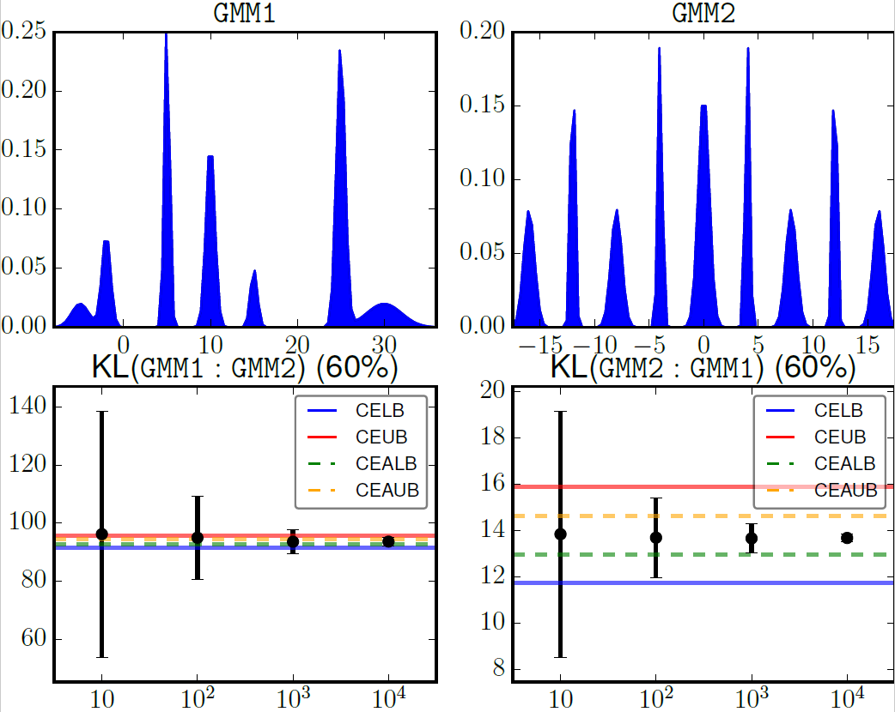

Kullback-Leibler divergence of mixtures/Differential Entropy of mixtures
Guaranteed bounds on the Kullback-Leibler divergence of univariate
mixtures using piecewise log-sum-exp inequalities (arxiv 1606.05850)
by Frank Nielsen and Ke Sun
Information-theoretic measures such as the entropy, cross-entropy and the KullbackLeibler
divergence between two mixture models is a core primitive in many signal processing
tasks. Since the Kullback-Leibler divergence of mixtures provably does not admit a
closed-form formula, it is in practice either estimated using costly Monte-Carlo stochastic
integration, approximated, or bounded using various techniques. We present a fast and
generic method that builds algorithmically closed-form lower and upper bounds on the entropy,
the cross-entropy and the Kullback-Leibler divergence of mixtures. We illustrate the
versatile method by reporting on our experiments for approximating the Kullback-Leibler
divergence between univariate exponential mixtures, Gaussian mixtures, Rayleigh mixtures,
and Gamma mixtures.
Python source code
Download the Python code for reproducible research:
klmm.tar.gz
Differential Entropy
For the Shannon entropy, the shell command produces the following pdf results:
entropy_gmm1.pdf
entropy_gmm2.pdf
entropy_gmm3.pdf
entropy_gmm4.pdf
entropy_gmm5.pdf
entropy_gmm6.pdf
Kullback-Leibler divergence of mixtures

For the Kullback-Leibler divergence, the shell command produces the following pdf results:
kl_gmm1_gmm2.pdf
kl_rmm1_rmm2.pdf
kl_emm1_emm2.pdf
kl_gamm1_gamm2.pdf
Combinatorial descriptions of the lower and upper envelopes are written in text files *.envelope.
For example, for the GMM1 data set file gmm1 (positive weights alpha are renormalized to one by the software) :
# alpha mu sigma
0.5 -5 1
1 -2 0.5
2 5 0.3
2 10 0.5
0.5 15 0.4
3 25 0.5
1 30 2
We get the combinatorial support intervals followed by the indices of the component for the upper and lower envelopes as below
(file gmm1.envelope):
# start end upper lower
-inf -40.000000 0 6
-40.000000 -25.020076 1 6
-25.020076 -24.968606 1 5
-24.968606 -3.219053 1 4
-3.219053 1.219053 2 4
1.219053 2.615495 1 4
2.615495 6.890300 6 4
6.890300 11.489828 3 4
11.489828 12.824402 3 2
12.824402 15.525749 5 2
15.525749 17.548493 5 6
17.548493 22.905116 0 6
22.905116 26.428217 4 6
26.428217 inf 0 6
Last updated, August 2016, v2 arxiv.